승강기기사 (2020-08-22 기출문제)
1과목: 승강기 개론
1. 초고층 빌딩 등에서 중간의 승계층까지 직행 왕복운전 하여 대량수송을 목적으로 하는 엘리베이터는?
- 셔틀 엘리베이터
- 역사용 엘리베이터
- 더블데크 엘리베이터
- 보도교용 엘리베이터
(정답률: 75%)

2. 레일을 죄는 힘이 처음에는 약하게 작용하고 하강함에 따라 점점 강해지다가 얼마 후 일정한 값에 도달하는 추락방지안전장치(비상정지장치) 방식은?
- 즉시 작동형
- 플렉시블 웨지 클램프(F.W.C)형
- 플렉시블 가이드 클램프(F.G.C)형
- 슬랙 로프 세이프티(slack rope safety)형
(정답률: 82%)
3. 무빙워크의 경사도는 최대 몇 도 이하이어야 하는가?
- 6°
- 8°
- 10°
- 12°
(정답률: 83%)
4. 전기식 엘리베이터의 매다는 장치(현수장치)에 대한 설명으로 틀린 것은?
- 매다는 장치는 독립적이어야 한다.
- 체인의 인장강도 및 특성 등이 KS B 1407에 적합해야 한다.
- 로프 또는 체인 등의 가닥수는 반드시 3가닥 이상이어야 한다.
- 카와 균형추 또는 평형추는 매다는 장치에 의해 매달려야 한다.
(정답률: 77%)
5. 유압파워 유니트에서 실린더로 통하는 압력배관 도중에 설치되는 수동밸브로서 이것을 닫으면 실린더의 기름이 파워유니트로 역류하는 것을 방지하는 것으로 유압장치의 보수, 점검 또는 수리 등을 할 때 사용되는 밸브는?
- 체크밸브
- 사이렌서
- 안전밸브
- 스톱밸브
(정답률: 78%)
6. 주차구획에 자동차를 들어가도록 한 후 그 주차구획을 수직으로 순환이동하여 자동차를 주차하도록 설계한 주차장치로 평균 입·출고 시간이 가장 빠른 입체주차설비 방식은?
- 승강기식
- 다단방식
- 수직순환식
- 평면왕복식
(정답률: 60%)
7. 유압식 엘리베이터의 경우 실린더 및 램은 전부하 압력의 2.3배의 압력에서 발생되는 힘의 조건하에서 내력 Rp0.2에서 몇 이상의 안전율이 보장되는 방법으로 설계되어야 하는가?
- 1.2
- 1.5
- 1.7
- 2.0
(정답률: 55%)
8. 엘리베이터의 카 벽으로 사용할 수 있는 유리는?
- 망유리
- 강화유리
- 복층유리
- 접합유리
(정답률: 71%)
9. 카 내부의 하중이 적재하중을 초과하면 경보가 울리고 출입문의 닫힘을 자동적으로 제지하여 엘리베이터가 움직이지 않게 하는 장치는?
- 정지 스위치
- 과부하 감지 장치
- 역결상 검출 장치
- 파이널 리밋 스위치
(정답률: 86%)
10. 엘리베이터의 위치별 전기조명의 조도 기준으로 틀린 것은?
- 기계실 작업공간의 바닥 면 : 200 lx 이상
- 기계실 작업공간 간 이동 공간의 바닥 면 : 50 lx 이상
- 카 지붕에서 수직 위로 1m 떨어진 곳 : 50 lx 이상
- 피트 바닥에서 수직 위로 1m 떨어진 곳 : 100 lx 이상
(정답률: 73%)
11. 장애인용 엘리베이터에서 스위치 수가 많아 1.2m 이내에 설치가 곤란할 경우에는 최대 몇 m 이하까지 완화할 수 있는가?
- 1.3
- 1.4
- 1.5
- 1.6
(정답률: 74%)
12. 로프와 시브(sheave)의 미끄러짐에 대한 설명으로 옳은 것은?
- 로프가 감기는 각도가 클수록 미끄러지기 쉽다.
- 카의 감속도와 가속도가 작을수록 미끄러지기 쉽다.
- 로프와 시브의 마찰계수가 클수록 미끄러지기 쉽다.
- 카측과 균형추측의 로프에 걸리는 중량비가 클수록 미끄러지기 쉽다.
(정답률: 71%)
13. 엘리베이터용 주행안내(가이드) 레일에 대한 설명으로 틀린 것은?
- 레일의 표준길이는 5m 이다.
- 균형추측 레일에는 강판을 성형한 레일을 사용할 수 있다.
- 레일 규격의 호칭은 가공 완료된 1m당의 중량을 표시한 것이다.
- 추락방지안전장치(비상정지장치)가 작동하는 곳에는 정밀가공한 T자형 레일이 사용된다.
(정답률: 61%)
14. 사람이 출입할 수 없도록 정격하중이 300kg 이하이고, 정격속도가 1m/s 이하인 엘리베이터는?
- 수평보행기
- 화물용 엘리베이터
- 침대용 엘리베이터
- 소형화물용 엘리베이터
(정답률: 80%)
15. 에너지 분산형 완충기는 카에 정격하중을 싣고 정격속도의 115%의 속도로 자유 낙하하여 완충기에 충돌할 때, 평균 감속도가 최대 얼마 이하이어야 하는가?
- 0.8 gn
- 1.0 gn
- 1.5 gn
- 2.5 gn
(정답률: 79%)
16. 유압식 엘리베이터에서 미리 설정된 방향으로 설정치를 초과한 상태로 과도하게 유체의 흐름이 증가하여 밸브를 통과하는 압력이 떨어지는 경우 자동으로 차단하도록 설계된 밸브는?
- 스톱밸브
- 압력밸브
- 안전밸브
- 럽처밸브
(정답률: 62%)
17. 완충기의 보기 쉬운 곳에 쉽게 지워지지 않는 방법으로 표시되어야 하는 내용이 아닌 것은?
- 제조·수입일자
- 완충기의 형식
- 부품안전인증표시
- 부품안전인증번호
(정답률: 63%)
18. 교류 엘리베이터의 제어방식은?
- 일그너 제어
- 워드레오나드 제어
- 정지레오나드 제어
- 가변전압가변주파수 제어
(정답률: 77%)
19. 엘리베이터의 VVVF 인버터 제어에 주로 사용되는 제어방식은?
- PAM
- PWM
- PSM
- PTM
(정답률: 77%)
20. 에스컬레이터의 특징에 대한 설명으로 틀린 것은?
- 대기시간 없이 연속적으로 수송이 가능하다.
- 백화점과 대형마트 등 설치 장소에 따라 구매 의욕을 높일 수 있다.
- 건축상으로 점유 면적이 크고 기계실이 필요하며 건물에 걸리는 하중이 각층에 분산되어 있다.
- 전동기 기동 시에 흐르는 대전류에 의한 부하전류의 변화가 엘리베이터에 비하여 적어 전원 설비 부담이 적다.
(정답률: 76%)
2과목: 승강기 설계
21. 기계대 강도 계산 시 기계대에 작용하는 하중에 포함되지 않는 것은?
- 로프 자중
- 권상기 자중
- 기계대 자중
- 균형추 자중
(정답률: 66%)
22. 설계용 수평지진력의 작용점은 일반적인 경우에 기기의 어느 부분으로 산정하여 계산하는가?
- 기기의 중심
- 기기의 최고점
- 기기의 최저점
- 기기의 최선단
(정답률: 71%)
23. 웜기어에서 웜의 회전수가 1800rpm, 웜의 줄수가 5, 웜 휠의 회전수가 360rpm일 때, 웜 휠의 잇수는?
- 10
- 25
- 50
- 100
(정답률: 66%)
24. 유압식 엘리베이터에서 실린더와 체크밸브 또는 하강밸브 사이의 가요성 호스는 전 부하 압력 및 파열 압력과 관련하여 안전율이 몇 이상이어야 하는가?
- 5
- 6
- 7
- 8
(정답률: 74%)
25. 장애인용 엘리베이터의 호출버튼·조작반 등 승강기의 안팎에 설치되는 모든 스위치의 높이는 바닥면으로부터 어느 위치에 설치되어야 하는가?
- 0.8m 이상 1.0m 이하
- 0.8m 이상 1.2m 이하
- 1.0m 이상 1.2m 이하
- 1.2m 이상 1.5m 이하
(정답률: 74%)
26. 엘리베이터용 도어머신의 요구사항이 아닌 것은?
- 작동이 원활하고 소음이 발생하지 않을 것
- 카 상부에 설치하기 위하여 소형 경량일 것
- 가장 중요한 부품이므로 고가의 재질을 사용하고 단가가 높을 것
- 동작회수가 엘리베이터의 기동회수의 2배가 되므로 보수가 용이할 것
(정답률: 80%)
27. 동력전원설비 용량을 산정하는데 필요한 요소가 아닌 것은?
- 가속전류
- 감속전류
- 전압강하
- 주위온도
(정답률: 58%)
28. 전기자에 전류가 흐르면 그 전류에 대한 자속이 발생해 주자극의 자속에 영향을 미쳐 주자속이 감소하고, 전기자 중성점이 이동하는 현상은?
- 자속 반작용
- 전류 반작용
- 전기자 반작용
- 주자극 반작용
(정답률: 66%)
29. 유압식 엘리베이터에서 유량제어밸브를 주회로에서 분기된 바이패스회로에 삽입하여 유량을 제어하는 회로는?
- 미터 인 회로
- 블리드 인 회로
- 미터 오프 회로
- 블리드 오프 회로
(정답률: 68%)
30. 밀폐식 승강로에서 허용되는 개구부가 아닌 것은?
- 승강장문을 설치하기 위한 개구부
- 건물 내 급배수관 설치를 위한 개구부
- 화재 시 가스 및 연기의 배출을 위한 통풍구
- 승강로의 비상문 및 점검문을 설치하기 위한 개구부
(정답률: 71%)
31. 소선의 표면에 아연도금 처리한 것으로 녹이 쉽게 발생하지 않기 때문에 다습한 환경에 사용하는 와이어로프 종류는?
- A종
- B종
- E종
- G종
(정답률: 72%)
32. 승용승강기의 설치기준에 따라 6층 이상 거실면적의 합계가 9000m2 인 전시장에 20인승 엘리베이터를 설치할대 최소 설치 대수는?
- 1
- 2
- 3
- 4
(정답률: 58%)
33. 엘리베이터가 다음과 같은 조건일 때, 무부하 및 전부하 시 각각의 트랙션비는 약 얼마인가?
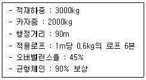
- 무부하 : 1.46, 전부하 : 1.58
- 무부하 : 1.46, 전부하 : 1.60
- 무부하 : 1.60, 전부하 : 1.46
- 무부하 : 1.60, 전부하 : 1.58
(정답률: 50%)
34. 엘리베이터가 출발층에서 출발한 후 서비스를 끝내고 다시 출발층으로 돌아오는 시간이 30초이고, 승객수는 10명일 때, 5분간 수송능력은 얼마인가?
- 50명
- 100명
- 150명
- 200명
(정답률: 69%)
35. 승강장문 근처의 승강장에 있는 자연조명 또는 인공조명은 카 조명이 꺼지더라도 이용자가 엘리베이터에 탑승하기 위해 승강장문이 열릴 때 미리 앞을 볼 수 있도록 바닥에서 몇 lx 이상이어야 하는가?
- 5
- 50
- 100
- 150
(정답률: 60%)
36. 기계실 작업구역의 유효 높이는 몇 m 이상이어야 하는가?
- 1.2
- 1.8
- 2.1
- 3
(정답률: 68%)
37. 그림과 같이 기어 A, B가 맞물려 있을 때, 수식이 틀린 것은? (단, D1, D2는 피치원 지름, N1, N2는 회전수, V1, V2는 원주 속도, Z1, Z2는 잇수, L은 중심거리이다.)
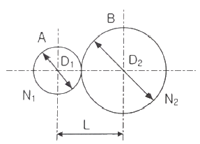
- N2D2 = N1D1
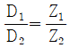
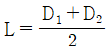
- D1 ＜ D2 이면 V1 ＜ V2 이다.
(정답률: 55%)
38. 60Hz, 6극 유도전동기의 슬립이 3% 이다. 이 전동기의 회전속도는 몇 rpm 인가?
- 1064
- 1164
- 1264
- 1364
(정답률: 63%)
39. 피트 바닥은 전 부하 상태의 카가 완충기에 작용하였을 때 카 완충기 지지대 아래에 부과되는 정하중의 몇 배를 지지할 수 있어야 하는가?
- 1
- 2
- 3
- 4
(정답률: 64%)
40. 카 천장에 비상구출문이 설치된 경우, 유효 개구부의 크기는 몇 이상이어야 하는가?
- 0.2m×0.3m 이상
- 0.3m×0.3m 이상
- 0.3m×0.4m 이상
- 0.4m×0.5m 이상
(정답률: 70%)
3과목: 일반기계공학
41. 다음 그림과 같은 타원형 단면을 갖는 봉이 인장하중(P)을 받을 때, 작용하는 인장응력은?
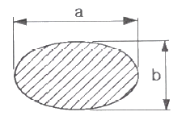
- πab2/4P
- 4P/πab2
- πab/4P
- 4P/πab
(정답률: 55%)
42. 두 기어가 맞물려 돌 때 잇수가 너무 적거나 잇수차가 현저히 클 때, 한쪽 기어의 이뿌리를 간섭하여 회전을 방해하는 현상을 방지하기 위한 방법으로 틀린 것은?
- 압력각을 작게 한다.
- 전위기어를 사용한다.
- 이끝을 둥글게 가공한다.
- 이의 높이를 줄인다.
(정답률: 42%)
43. 디퓨저(diffuser) 펌프, 벌류트(volute) 펌프가 포함되는 펌프 종류는?
- 원심 펌프
- 왕복식 펌프
- 축류 펌프
- 회전 펌프
(정답률: 46%)
44. 비틀림 모멘트를 받는 원형 단면축에 발생되는 최대전단응력에 관한 설명으로 옳은 것은?
- 축 지름이 증가하면 최대전단응력은 감소한다.
- 극단면계수가 감소하면 최대전단응력은 감소한다.
- 가해지는 토크가 증가하면 최대전단응력은 감소한다.
- 단면의 극관성 모멘트가 증가하면 최대전단응력은 증가한다.
(정답률: 38%)
45. 마이크로미터로 측정할 수 없는 것은?
- 실린더 내경
- 축의 편심량
- 피스톤의 외경
- 디스크 브레이크의 니스크 두께
(정답률: 68%)
46. 바이스, 잭, 프레스 등과 같이 힘을 전달하거나 부품을 이동하는 기구용에 적절하지 않은 나사는?
- 사각 나사
- 사다리꼴 나사
- 톱니 나사
- 관용 나사
(정답률: 65%)
47. 다음 중 피복아크 용접에서 언더 컷(under cut)이 가장 많이 나타나는 용접 조건은?
- 저전압, 용접속도가 느릴 때
- 전류 부족, 용접속도가 느릴 때
- 용접속도가 빠를 때, 전류 과대
- 용접속도가 느릴 때, 전류 과대
(정답률: 59%)
48. 그림과 같이 중앙에 집중 하중을 받고 있는 단순 지지보의 최대 굽힘응력은 몇 kPa 인가? (단, 보의 폭은 3cm이고, 높이가 5cm 인 직사각형 단면이다.)
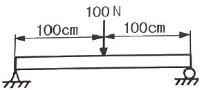
- 4
- 8
- 4000
- 8000
(정답률: 43%)
49. 큰 회전력을 얻을 수 있고 양 방향 회전축에 120° 각도로 두 쌍을 설치하는 키는?
- 원뿔 키
- 새들 키
- 접선 키
- 드라이빙 키
(정답률: 58%)
50. 금속을 가열하여 용해시킨 후 주형에 주입해 냉각 응고시켜 목적하는 제품을 만드는 것은?
- 주조
- 압연
- 제관
- 단조
(정답률: 67%)
51. 원통 커플링에서 축 지름이 30mm이고, 원통이 축을 누르는 힘이 50N일 때 커플링이 전달할 수 있는 토크(N·mm)는? (단, 접촉부 마찰계수는 0.2 이다.)
- 471
- 587
- 785
- 942
(정답률: 27%)
52. 유압 제어 밸브의 종류에서 압력 제어 밸브가 아닌 것은?
- 릴리프 밸브
- 리듀싱 밸브
- 디셀러레이션 밸브
- 카운터 밸런스 밸브
(정답률: 45%)
53. 450℃까지의 온도에서 비강도가 높고 내식성이 우수하여 항공기 엔진 주위의 부품재료로 사용되며 비중은 약 4.51 인 것은?
- Al
- Ni
- Zn
- Ti
(정답률: 61%)
54. 단조가공에 대한 설명으로 틀린 것은?
- 재료의 조직을 미세화 한다.
- 복잡한 구조의 소재가공에 적합하다.
- 가열한 상태에서 해머로 타격한다.
- 산화에 의한 스케일이 발생한다.
(정답률: 53%)
55. 유압 작동유의 구비조건으로 옳은 것은?
- 압축성이어야 한다.
- 열을 방출하지 아니하여야 한다.
- 장시간 사용하여도 화학적으로 안정하여야 한다.
- 외부로부터 침입한 불순물을 침전 분리시키지 않아야 한다.
(정답률: 58%)
56. 마찰부분이 많은 부품에 내마모성과 인성이 풍부한 강을 만들기 위한 열처리 방법에 속하지 않는 것은?
- 침탄법
- 화염 경화법
- 질화법
- 저주파 경화법
(정답률: 54%)
57. 코일 스프링에서 스프링 상수에 대한 설명으로 틀린 것은?
- 스프링 소재 지름의 4승에 비례한다.
- 스프링의 변형량에 비례한다.
- 코일 평균 지름의 3승에 반비례한다.
- 스프링 소재의 전단탄성계수에 비례한다.
(정답률: 49%)
58. 기계재료에서 중금속을 구분하는 기준은?
- 비중이 0.5 이상인 금속
- 비중이 1 이상인 금속
- 비중이 5 이상인 금속
- 비중이 10 이상인 금속
(정답률: 52%)
59. 지름 24mm의 환봉에 인장하중이 작용할 경우 최대 허용인장하중(N)은 약 얼마인가? (단, 환봉의 인장강도는 45N/mm2 이고, 안전율은 8이다.)
- 2544
- 5089
- 8640
- 20357
(정답률: 34%)
60. 구성인선(built-up edge)의 방지대책으로 적절한 것은?
- 절삭 속도를 느리게 하고 이송 속도를 빠르게 한다.
- 절삭 속도를 빠르게 하고 윤활성이 좋은 절삭유를 사용한다.
- 바이트의 윗면 경사각을 작게 하고 이송속도를 느리게 한다.
- 절삭 깊이를 깊게 하고 이송 속도를 빠르게 한다.
(정답률: 58%)
4과목: 전기제어공학
61. 3상 유도전동기의 출력이 10kW, 슬립이 4.8% 일 때의 2차 동손은 약 몇 kW 인가?
- 0.24
- 0.36
- 0.5
- 0.8
(정답률: 32%)
62. 유도전동기에 인가되는 전압과 주파수의 비를 일정하게 제어하여 유도전동기의 속도를 정격속도 이하로 제어하는 방식은?
- CVCF 제어방식
- VVVF 제어방식
- 교류 궤환 제어방식
- 교류 2단 속도 제어방식
(정답률: 64%)
63. 전력(W)에 관한 설명으로 틀린 것은?
- 단위는 J/s 이다.
- 열량을 적분하면 전력이다.
- 단위 시간에 대한 전기 에너지 이다.
- 공률(일률)과 같은 단위를 갖는다.
(정답률: 55%)
64. 입력 A, B, C에 따라 Y를 출력하는 다음의 회로는 무접점 논리회로 중 어떤 회로인가?
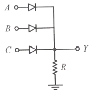
- OR 회로
- NOR 회로
- AND 회로
- NAND 회로
(정답률: 49%)
65. 제어편차가 검출될 때 편차가 변화하는 속도에 비례하여 조작량을 가감하도록 하는 제어로써 오차가 커지는 것을 미연에 방지하는 제어동작은?
- ON/OFF 제어 동작
- 미분 제어 동작
- 적분 제어 동작
- 비례 제어 동작
(정답률: 48%)
66. 선간전압 200V의 3상 교류전원에 화물용 승강기를 접속하고 전력과 전류를 측정하였더니 2.77kW, 10A이었다. 이 화물용 승강기 모터의 역률은 약 얼마인가?
- 0.6
- 0.7
- 0.8
- 0.9
(정답률: 39%)
67. 그림의 논리회로에서 A, B, C, D를 입력, Y를 출력이라 할 때 출력 식은?
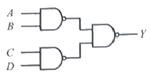
- A+B+C+D
- (A+B)(C+D)
- AB+CD
- ABCD
(정답률: 41%)
68. 그림과 같은 회로에 흐르는 전류 I(A)는?
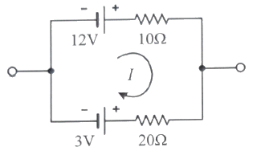
- 0.3
- 0.6
- 0.9
- 1.2
(정답률: 39%)
69. 환상 솔렌외드 철심에 200회의 코일을 감고 2A의 전류를 흘릴 때 발생하는 기자력은 몇 AT인가?
- 50
- 100
- 200
- 400
(정답률: 58%)
70. e(t)=200sinωt(V),
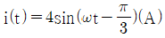
일 때 유효전력(W)은?- 100
- 200
- 300
- 400
(정답률: 41%)
71. 전기자 철심을 규소 강판으로 성층하는 주된 이유는?
- 정류자면의 손상이 적다.
- 가공하기 쉽다.
- 철손을 적게 할 수 있다.
- 기계손을 적게 할 수 있다.
(정답률: 58%)
72. 논리식 A+BC와 등가인 논리식은?
- AB+AC
- (A+B)(A+C)
- (A+B)C
- (A+C)B
(정답률: 53%)
73. 그림과 같은 RL 직렬회로에서 공급전압의 크기가 10V 일 때 |VR|=8V 이면 VL의 크기는 몇 V 인가?
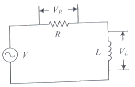
- 2
- 4
- 6
- 8
(정답률: 41%)
74. 그림과 같은 단위 피드백 제어시스템의 전달함수 C(s)/R(s)는?
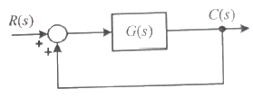
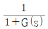
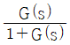
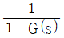
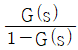
(정답률: 59%)
75. 그림과 같은 회로에서 전달함수 G(s)=I(s)/V(s)를 구하면?
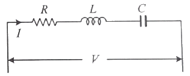
- R + Ls + Cs
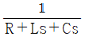
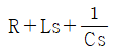
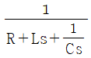
(정답률: 53%)
76. 회전각을 전압으로 변환시키는데 사용되는 위치 변환기는?
- 속도계
- 증폭기
- 변조기
- 전위차계
(정답률: 56%)
77. 10μF의 콘덴서에 200V의 전압을 인가하였을 때 콘덴서에 축적되는 전하량은 몇 C 인가?
- 2×10-3
- 2×10-4
- 2×10-5
- 2×10-6
(정답률: 40%)
78. 승강기나 에스컬레이터 등의 옥내 전선의 절연저항을 측정하는데 가장 적당한 측정기기는?
- 메거
- 휘트스톤 브리지
- 켈빈 더블 브리지
- 코올라우시 브리지
(정답률: 66%)
79. 폐루프 제이시스템의 구성에서 조절부와 조작부를 합쳐서 무엇이라고 하는가?
- 보상요소
- 제어요소
- 기준입력요소
- 귀환요소
(정답률: 56%)
80. 그림의 신호흐름선도에서 전달함수 C(s)/R(s)는?
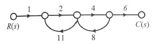
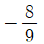
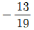
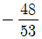
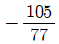
(정답률: 62%)